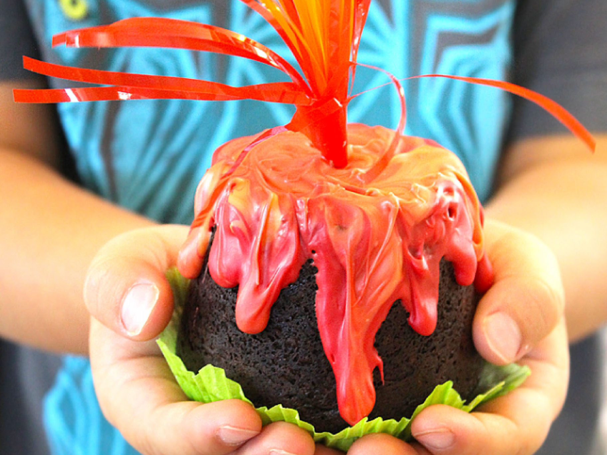

Volcano Muffins

Wow your friends with volcano muffins
Volcano muffins not only pack a delicious punch, they create a flavor explosion in your mouth. Delightful to look at, they will conjure images of your grandmother at the foot of vesuvius baking in her shop. Make sure you bake some of these for your next birthday party, you won't regret it!
Ingredients
egg
golden flax meal
unsweetened cocoa powder
stevia extract or a stevia blend like Truvia
baking powder
coconut oil
water or berries
Steps
- Crack 1 egg into a coffee cup and whisk it well with your fork
- Add 2 flat Tbs. golden flax meal (or grind your own meal from any flax seeds)
- Add 2 rounded Tbs. cocoa powder
- Add 4-5 tsp. of Truvia or 4-6 good shakes of stevia extract
- Add 1 flat Tbs. coconut oil or butter
- Add ½ tsp.aluminum free baking powder
- Mix all ingredients well then add either a small handful of berries or 1 Tbs of water
- If using only water (not berries), microwave for only 40 seconds. The muffin should still be gooey in the center when you take it out. If using berries you’ll need closer to a full minute or so. Oven versions should take between 8-12 minutes. Take out of oven before top of muffin is completely set.